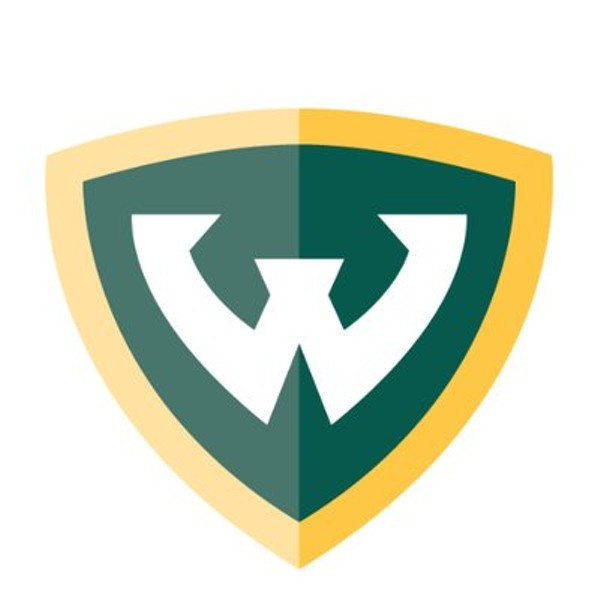
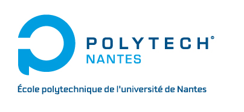

Data Scientist
Data Scientist
Data Scientist in a team of 2.
Worked towards deploying the first ML model of the company in production.
Projects : Dynamic Pricing, Optimizing switching (between selling and donations), recognizing the type of product through its label (NLP).
Handled business enquiries through : Dashboards, SQL queries.
Deployed data pipelines.
Python, sklearn, Mlflow, Dagster, AWS.
Python, sklearn, heuristics.
Metabase, AWS Quicksight, postgresql, AWS Athena, AWS S3.
Dagster.
 Data Scientist intern
Data Scientist intern
Data Scientist in a team of developers.
Worked towards deploying the first ML model of the team in production.
Project : Classifying web end-to-end tests.
Python, Flask.
Python, sklearn.
 Year abroad
8 months at Wayne State University (Detroit, MI, USA).
AI classes.
Game design & programming classes.
Machine Learning, AI 1 & 2. Participated in a kaggle contest.
Game Programming and Design 1 & 2. Developed a 3D survival game.
 Bs and Ms
BS of Math & Physics. Ms of Computer Science specialized in Business Intelligence.
Engineering School of Polytech Nantes (Nantes, France).